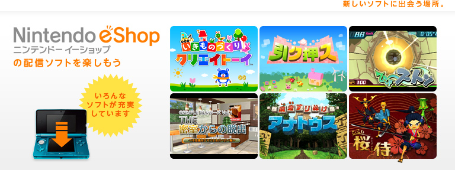
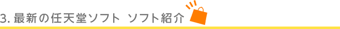
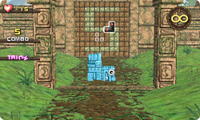
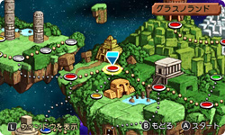
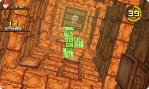
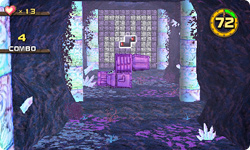
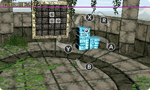
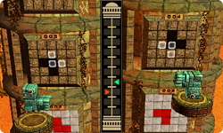
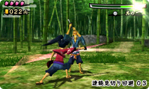

さまざまな形をしたブロックを回転させて、迫りくる壁に空いているアナをすりぬけ、ゴールを目指すという基本ルールはそのままに、実にさまざまな部分がパワーアップしています。
ステージをクリアする目的は、「破壊神ブッコ・ワース」によって奪われた、「創造神アナトゥス」の力の源である「ココロ」を取り戻すこと。自分が操作するブロックは「マモリガミ」と呼ばれる3匹の神獣です。

またゲームのテーマになっている神話的な風景は、どことなくマヤ・アステカ文明などを思わせる、不思議な世界観で表現されています。
前作からストーリーが加わることで、ステージもフィールドマップから選んでプレイできる形式になりました。ステージをクリアしたり、一定数のココロを集めることで、プレイできるステージが増えるようになっています。

ステージはチュートリアル形式のものから、通常のクリアを目指すもの、エンドレスで楽しめるもの、最速タイムやハイスコアを目指すものなどなど、ルールや種類も豊富で、ダウンロードソフトとは思えないほどのボリュームです。

筆者はWii版もプレイしていますが、縦に移動する塔のステージなど、新しい要素がたくさんあって、とても面白くプレイできました。強制高速スクロールで制限時間内にクリアを目指すステージの爽快感もクセになりそうでオススメです。
もちろん、3D表示にも対応しています。

もともと立体的な奥行きが重要なゲームなので、最初からニンテンドー3DS用のソフトだったのではないかというくらい相性はバッチリです。手前や奥に浮かんでマモリガミを邪魔する障害物や曲がりくねったトンネルなど、臨場感たっぷりの演出もあいまって、アナをすりぬけるスリルを引き立ててくれます。

一方で、Wiiウェア版をプレイした方にはおなじみの「コンボ」や「トリック」といったテクニックは健在です。
本作ではニンテンドー3DSが1台でも2台でも対戦プレイ可能な「ふたりであそぶ」モードが追加されたので、練習の成果を対戦の場で披露したりと、スコアアタックも白熱しそうです。

さらわれたお姫さまを助け出すため、主人公である「桜侍」が、刀を使ったチャンバラでバッサバッサと敵を切り倒します。ニンテンドー3DSの立体視で表現される、独特で雅やかな和風テイストの世界観が特徴的です。
また、ニンテンドー3DSを持ち歩いた歩数を桜に奉納して彩りを加える「庭園」モードや、条件を満たすと遊べる「百人斬り」モードなどもあり、遊びごたえもたっぷりです。ぜひ『ひらり 桜侍』をダウンロードして、居合いの妙技をマスターしてください。